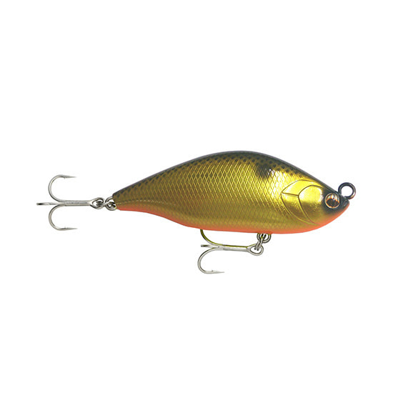
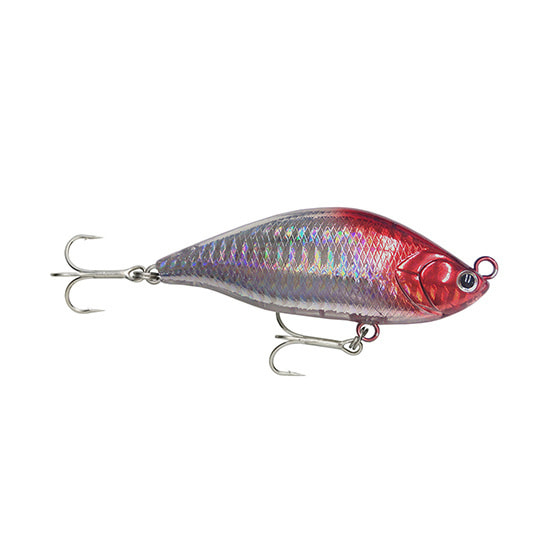
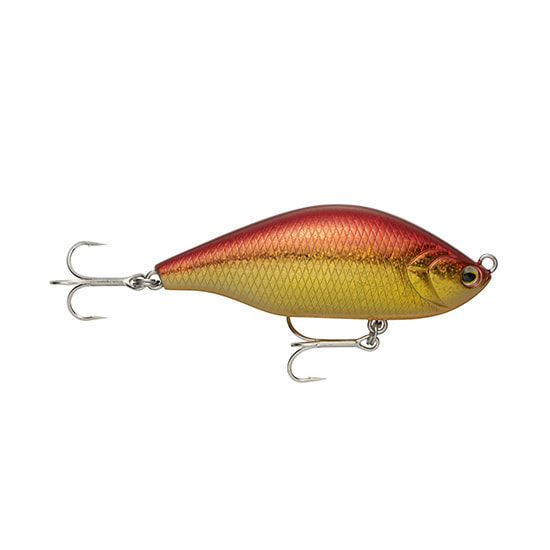
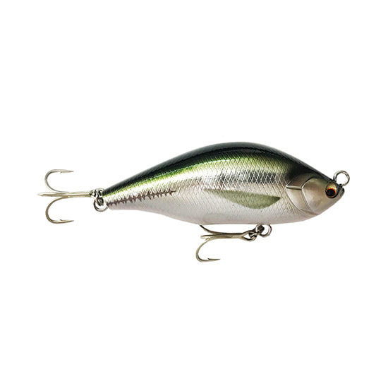

エアオグル85SLM
（AIR OGRE 85SLM）
エアオグル85SLM（AIR OGRE 85SLM）はNORTH CRAFT（ノースクラフト）のスローシンキングスイムベイトです。
「ランカーを獲るために生まれた唯一無二のスーパーベイト」として、激戦区で釣果を出し続けてきた85mmモデル。SLM（スラローム）の名のとおりのワイドなS字アクションでスレた大型魚に口を使わせ、85SLMで釣られたアカメはJGFAの世界記録にも認定されています。

画像出典:ラパラ（ノースクラフト）公式HP
スペック
- メーカー
- NORTH CRAFT（ノースクラフト）
- タイプ
- スローシンキング（水平フォール）
- 全長
- 85mm
- 自重
- 28g
- フック
- VMC7554 #1
- リング
- #5強化スプリットリング
- ターゲット
- シーバス・アカメ・チヌ・マダイなど
▼今すぐチェック

エアオグル85SLMの特徴
ワイドなS字スラロームで、スレたモンスターの狩猟本能を呼び覚ますスーパーベイト
-
ワイドなS字アクションと高速リトリーブ対応
ゆっくり巻くだけでワイドなS字スラロームを描き、高速リトリーブにも対応。デイゲームの高速巻きで、やる気のない魚にリアクションを誘発することもできる。
-
スローシンキング＋水平フォール
スローシンキングで水平にフォールするため、横引きに反応しない魚にはリフト＆フォールの縦の動きで誘える。蟹パターンが通用する魚種にも有効だ。
-
ドリフトでも存在を感じられる操作性と強化タックル
ドリフトアプローチでもルアーの存在を明確に感じられる操作性。#5強化スプリットリングとVMC7554 #1を標準装備し、ランカーとのファイトにも備えている。
エアオグル85SLMの使い方
メーカーが推奨する誘い方は5つ。まずはゆっくり巻くだけで、タイプとサイズの違いでレンジを選ぶ。食いが浅い時は巻きながらのトゥイッチやジャークで誘って食わせる。
活性が低く横引きに見向きもしない魚にはリフト＆フォールの縦の動きで、流れが効いている時はピンポイントにドリフトで流し込んで直撃。デイゲームでは高速リトリーブでリアクションを狙います。
エアオグル85SLMの得意な状況
プレッシャーの高い激戦区で、スレた大型のシーバスやアカメを狙う状況が最大の出番。
蟹を捕食している魚にも有効なので、チヌやマダイなど蟹パターンが通用する釣りでも選びたい1本です。
ワンポイント
まずは「ゆっくり巻くだけ」から始めて、S字の振り幅を手元で感じられる速度を探すのがコツです。
サイズは70SLM（21g）・85SLM（28g）・120SLM（64g）の3種類。ベイトサイズや狙う魚の大きさで選び分けましょう。
エアオグルシリーズの使い分け
| モデル | 全長／自重 | 得意な場面 |
|---|---|---|
| 70SLM | 70mm／21g | 小〜中型ベイト・食わせ重視のコンパクトサイズ |
| 85SLM | 85mm／28g | シリーズの基準サイズ・アカメ世界記録実績（本記事のモデル） |
| 120SLM | 120mm／64g | 大型ベイト・ランカーやアカメの大物狙い |
エアオグルは70SLM・85SLM・120SLMの3サイズ展開。ベイトサイズと狙う魚の大きさで選び、85SLMはその中でも汎用性の高い中心サイズだ。
オススメカラー
エアオグル85SLMのカラーから、オススメを厳選して紹介します。

GSPM ゴールドコノシロコノシロパターンにマッチするゴールド系。大型ベイトが入っている時に。

HRH ホログラムレッドヘッド定番レッドヘッドにホロのフラッシング。ナイトゲームのパイロットに。

GR アカキン濁りやローライトに強いアカキン。マズメ時や濁った河川で。

KNAJI 真鯵（生塗り）アジを模したリアル系。ベイトがアジの時や澄み潮でナチュラルに見せたい時に。
画像出典:ラパラ（ノースクラフト）公式HP
エアオグル85SLMに似ているルアー
-
 ムロッソ85S
OSP
詳細はこちら＞
ムロッソ85S
OSP
詳細はこちら＞
フルフラットボディのシンキングペンシル。流れに応じたS字スラロームとドリフト適性という点で、エアオグル85SLMと狙いどころが重なる。
-
 ジグザグベイト80S
ポジドライブガレージ
詳細はこちら＞
ジグザグベイト80S
ポジドライブガレージ
詳細はこちら＞
全長80mmのヴァリアブルスイムベイト。スローではS字、ジャークではジグザグと使い分けられ、同じサイズ帯のS字系として比べたい1本。
-
 ジグザグベイト120S
ポジドライブガレージ
詳細はこちら＞
ジグザグベイト120S
ポジドライブガレージ
詳細はこちら＞
120mmのジグザグベイト。大型ベイトやランカー狙いで、エアオグル120SLMと同じように大きめのシルエットを見せたい時の選択肢になる。